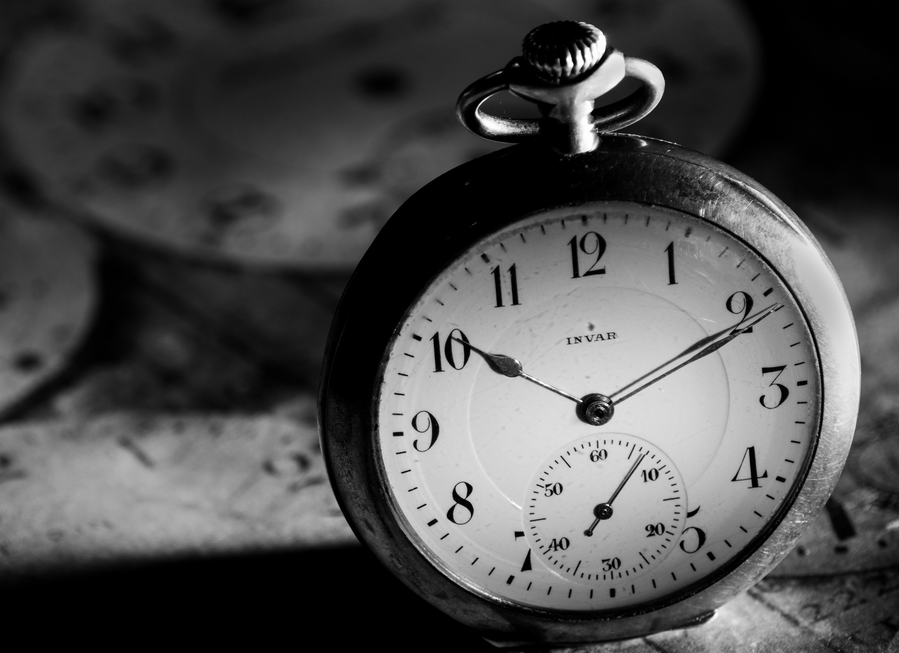
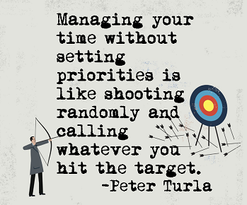
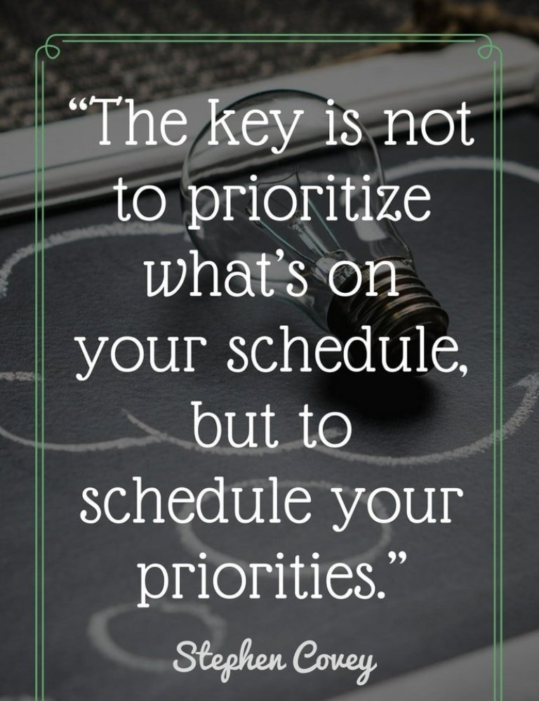
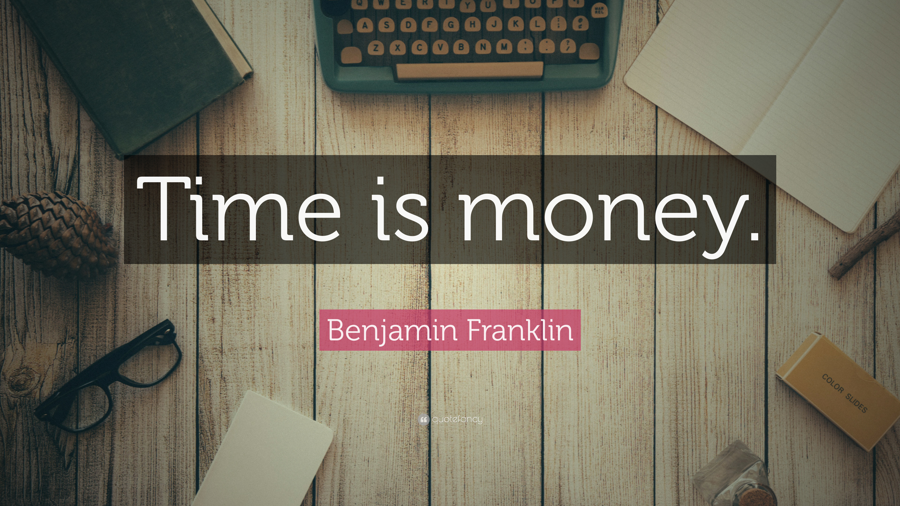

Time
waits for no one
By: Disha Surana
Time is very precious and we should not waste it in any way. Likewise, we can earn the money we spent but we cannot get back the time we have lost. So, this makes the time more valuable than money. Hence, we should utilize the time in the most possible way.
Importance of Time
This the most valuable and precious thing in the world. Also, we should use it for our good as well as for the good of others around us. This will help us and the society to progress towards a better tomorrow. Moreover, we should teach our children the importance and value of time. Also, wasting time will only lead you to cause an issue to you and the people around you.
If you waste Time, Time will waste you.
Effective Utilization of Time
For effectively utilizing the time we must consider some points which will help us in our whole life. This utilization includes setting goals, prepare work lists, prioritize task, and take adequate sleep and various others.
For effectively utilizing time set long and short term goals these goals will help you in remaining productive. Moreover, they will prove as a driving force that will keep you motivated.
Also, this will give the willingness to achieve something in life. In the beginning, it will feel like a boring task but when you do it regularly then you will realize that that it only helps you to increase your productivity. Ultimately, this will force you to achieve more in life.
Prioritizing task is a very effective way of managing time. Also, because of it, you will know the importance of various task and jobs. Apart from that, if your club and perform a similar activity in a go then it also increases your productivity. Hence, it will help you to achieve more in life.
Being productive does not mean that you engage yourself in different tasks every time. Taking proper sleep and exercising is also part of being productive. Besides, proper exercise and sleep maintain a balance between body and mind which is very important for being productive and efficient.
Value of Time
Although most people do not understand how valuable time is until they lost it. Besides, there are people in the world who prioritize money over time because according to them, time is nothing.
But, they do not realize the fact that it is time that has given them the opportunity to earn money. Apart from this, the time has given us prosperity and happiness and on the contrary, it has also given us sorrow and grief.
Power of Time
In previous time many kings proclaim themselves as the ruler of their age and all. But, they forget that they have limited time. Time is the only thing in the world that is limitless. Time can make you a king or a beggar in a movement of seconds.